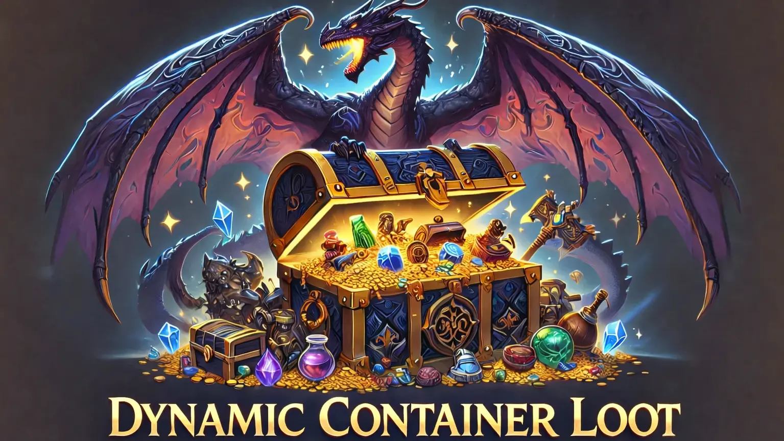

Change Logs
Release history and change logs for Dynamic Container Loot.
Version 0.4.5a RELEASED
DCL now saves fixes to a patch file, preserves scripts that would otherwise be lost, generates a visual report, and skips unnecessary work on repeat launches for faster startup.
Features
- NEW Patch file generation. DCL saves all container fixes to a
DynamicContainerLoot.espfile so tools like xEdit can see what was changed. Enabled by default. - NEW Smart startup. If the patch file is already loaded and your load order hasn't changed, DCL skips runtime patching entirely for faster game startup.
- NEW Script preservation. If a losing mod added scripts to a container but the winning mod didn't have them, DCL finds and keeps those scripts instead of letting them disappear.
- NEW Manual edit protection. If you edit the patch file in xEdit, DCL detects the change and won't overwrite your work. Set
rebuildesp=truein the INI to force a fresh rebuild. - NEW HTML merge report. A visual report of every container DCL touched, laid out like xEdit with one column per plugin and a final "DCL Merged" column, color-coded to show what changed. Enabled by default.
- NEW Script status in logs. The log now reports whether scripts were kept, carried forward from a losing mod, or lost during the merge.
Fixes
- FIX Empty containers in patch file. Fixed a bug where the patch file could write empty containers, wiping out their contents in-game. If DCL can't save a container's items to the patch file, it now skips that container instead of writing a blank one.
- FIX Item count mismatch. The item count in the patch file now matches the actual number of items written, preventing mismatches that could cause issues.
- FIX Patch file format. The patch file now uses the correct Skyrim SE format (Form 44) instead of the older Skyrim LE format.
Improvements
- IMPROVED Better item names in logs. DCL now looks up display names, editor IDs, and cached IDs from plugin files so items show readable names instead of hex codes.
- IMPROVED Full subrecord handling in patch files. The patch file correctly remaps all internal references including keywords, alternate textures, quest links, and script data so nothing breaks.
- IMPROVED Always patches at runtime when needed. If the patch file doesn't exist or isn't active in your mod manager, DCL always fixes containers at runtime so nothing is missed.
Changes
- CHANGE New defaults. Patch file generation and HTML reports are now enabled by default. Detailed logging is off by default.
- CHANGE Report saves next to log file. The HTML report is saved in your SKSE logs folder alongside
DynamicContainerLoot.log. - CHANGE New INI settings. Added
generateesp,generatereport, andrebuildespto control patch file generation, HTML reports, and forced rebuilds.
Version 0.4a
Stability release. Fixed the ESP record removal bug, improved merge logging, and removed the in-game notification system until a safe implementation is ready.
Fixes
- FIX ESP record removal bug. The in-game merge notification was using SKSE's UI task scheduling to check HUD state and display notifications during save loads. This interfered with the engine and caused container data corruption. The notification system has been removed entirely to resolve the issue.
Improvements
- IMPROVED Logging clarity. The log summary now clearly reports total containers, override counts, conflict counts, and merge results. With
enablelogs=true, each merged container shows a full breakdown: sources, changes (additions/removals/count changes), carried forward items, and final state. - IMPROVED Aggregate item summary. When detailed logging is enabled, the log includes a "most frequently added items" summary showing which items were added to the most containers and which mod added them.
Changes
- CHANGE In-game merge notification removed. The "X Containers Merged" notification has been removed from the plugin until a safe implementation is ready. Merge results are always available in the log file at
Data/SKSE/Plugins/DynamicContainerLoot.log. - CHANGE
enablenotificationINI setting removed. This setting is no longer needed and will be ignored if present in existing INI files.
Version 0.1.0 Initial Release
First release of Dynamic Container Loot. Runtime container merging for Skyrim SE, AE, and VR.
Features
- NEW Runtime container merge. Automatically merges container loot from all mods when 3+ plugins edit the same CONT record.
- NEW Three-phase merge algorithm. Additions, removals, and count changes from loser mods are computed and applied to the winner.
- NEW Direct ESP/ESM/ESL parsing. Reads plugin files from disk to reconstruct what each mod intended. Supports compressed records and light plugins.
- NEW EditorID cache. Scans LVLI records for display names so leveled list items get readable names in detailed logs.
- NEW INI configuration. Auto-generates
DynamicContainerLoot.iniwith defaults on first launch. - NEW Detailed per-container logging. Optional verbose logging shows every item added, removed, or changed per container.
- NEW SE, AE, and VR support. Single plugin binary covers all Skyrim editions via CommonLibSSE-NG.